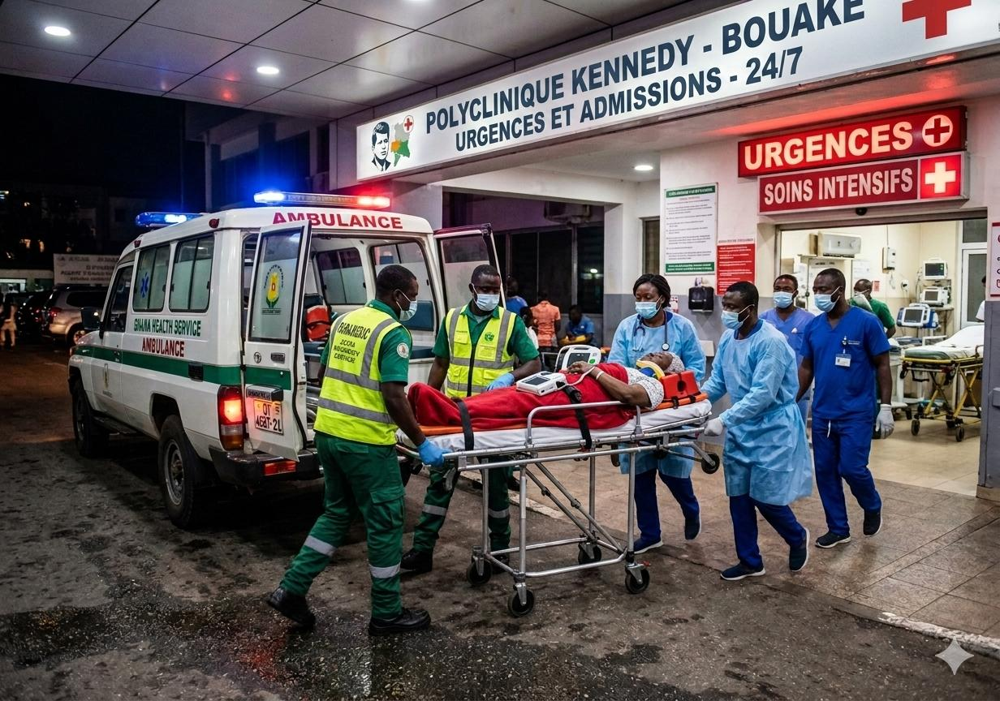

Notre équipe médicale d'urgence est disponible jour et nuit pour vous prendre en charge. N'hésitez pas à nous contacter en cas d'urgence.
Le service d'urgences de la Polyclinique Kennedy est opérationnel 24 heures sur 24, 7 jours sur 7, y compris les jours fériés. Notre mission : assurer une prise en charge rapide et efficace de toutes les situations d'urgence médicale.
Dès votre arrivée, vous êtes accueilli par notre équipe qui évalue immédiatement la gravité de votre état pour vous orienter vers les soins appropriés. Les cas les plus urgents sont pris en charge en priorité.
Notre plateau technique permet de réaliser rapidement les examens nécessaires (analyses, radiographie, échographie) pour un diagnostic précis et une prise en charge optimale.

Notre service prend en charge une large gamme d'urgences médicales. Voici les principales situations qui nécessitent une consultation urgente.
Notre service d'urgences est composé d'une équipe pluridisciplinaire expérimentée, formée à la prise en charge des situations d'urgence les plus diverses.
Dès votre arrivée, un infirmier évalue la gravité de votre état pour déterminer le niveau de priorité de votre prise en charge.
Un médecin urgentiste vous examine et prescrit les examens complémentaires nécessaires (analyses, radiographie, etc.).
Les examens sont réalisés rapidement grâce à notre plateau technique disponible 24h/24. Les résultats sont analysés par le médecin.
Selon votre état, vous recevez les soins nécessaires aux urgences, ou vous êtes orienté vers une hospitalisation ou une consultation spécialisée.
En cas de doute sur la gravité de la situation, n'hésitez pas à nous appeler. Notre équipe peut vous conseiller et vous guider.
Si possible, munissez-vous de votre pièce d'identité, carte d'assurance et tout document médical utile (ordonnances, résultats d'examens).
Si votre état le permet, venez accompagné d'un proche qui pourra nous fournir des informations et rester auprès de vous.
Apportez la liste des médicaments que vous prenez habituellement, ou les boîtes si vous les avez. C'est important pour votre prise en charge.
Notre service d'urgences est situé à l'entrée principale de la Polyclinique Kennedy, avec un accès facilité pour les ambulances et les urgences.